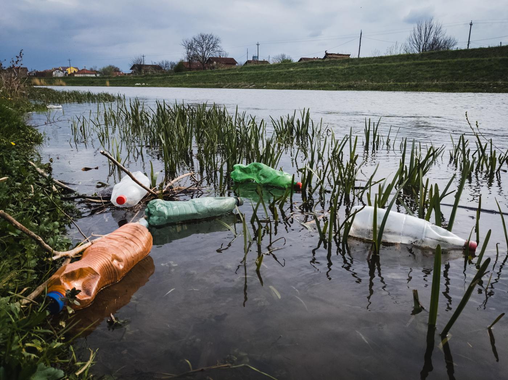

Water for plastic-free events
Refill stations that don't run dry.
Plan, track and restock water at your event, so nobody needs a plastic bottle. No app, no login.
2,000 people, one afternoon: switching from plastic bottles to kulhads or bagasse cups keeps 3,000 to 6,000 bottles, about 30 to 78 kg of plastic, out of the bin.
My events
How it works
- 1Plan in 30 secondsHow many jars and cups to order.
- 2Volunteers tapScan a QR code at the station; tap when a jar is changed.
- 3Runners go earlySent before a station runs dry.
- 4See the impactLitres served and plastic bottles avoided.

- India emits the most plastic pollution in the world.9.3 million tonnes a year, about a fifth of the world's total. Nature, 2024
- Bottled water is full of plastic.About 240,000 tiny particles per litre, and more the longer bottles sit in the sun. PNAS, 2024
- Ordinary paper cups are lined with plastic.Hot drinks pull microplastics out of the lining. Use kulhad, bagasse or unlined paper. IIT Kharagpur